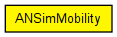
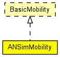

Uses the <position_change> elements of the ANSim tool's trace file.
Author: Andras Varga
The following diagram shows usage relationships between types. Unresolved types are missing from the diagram. Click here to see the full picture.
The following diagram shows inheritance relationships for this type. Unresolved types are missing from the diagram. Click here to see the full picture.
| Name | Type | Default value | Description |
|---|---|---|---|
| debug | bool | false |
debug switch |
| ansimTrace | xml |
the ANSim trace file in XML |
|
| nodeId | int |
<position_change> elements to match; -1 gets substituted to parent module's index |
|
| updateInterval | double | 100ms |
time interval to update the hosts position |
| Name | Value | Description |
|---|---|---|
| display | i=block/cogwheel_s |
// // Uses the <position_change> elements of the ANSim tool's // trace file. // // @author Andras Varga // simple ANSimMobility like BasicMobility { parameters: bool debug = default(false); // debug switch xml ansimTrace; // the ANSim trace file in XML int nodeId; // <position_change> elements to match; // -1 gets substituted to parent module's index double updateInterval @unit("s") = default(100ms); // time interval to update the hosts position @display("i=block/cogwheel_s"); }